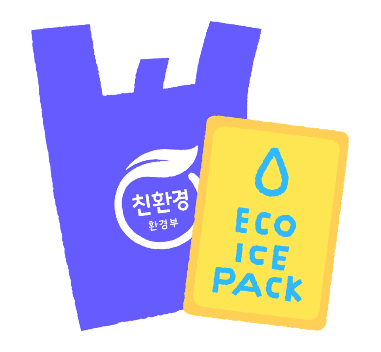
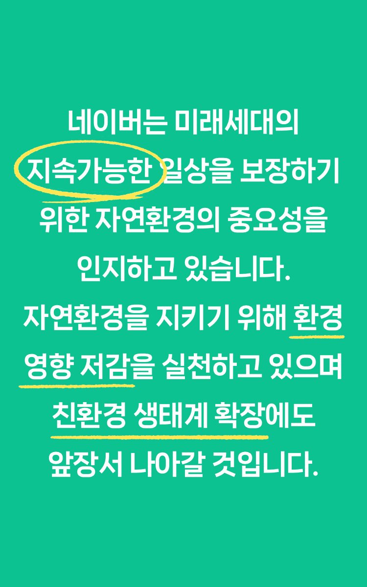

Green Initiative
건강한 지구를 위해
네이버가 Green 계획
탄소 순배출을 제로로 만들겠다는
네이버의 Green 계획!
탄소 발자국을
줄이는 것부터 시작합니다.
- 온실가스 배출량 전망치
- 온실가스 배출 감축량
- Net Emission Curve
Green Digital
네이버로 시작하는
디지털 친환경
네이버 전자문서로
지구보호 효과
-
2만 4천 그루
1HA 숲 25개 (축구장 약 35개 넓이)에 해당하는
12M 높이 나무 약 2만 4천 그루 보호 효과 -
9,200L
12만 명이 1년 동안 마시는
9,200L 만큼의 물 절감 효과 -
2,176tCO2
30년 생 소나무 숲 202HA에서
1년간 상쇄하는
탄소 2,176t 절감
Green Commerce
지구를 위한
가장 쉽고 착한 소비
-
상품만큼 중요한 포장,
친환경 패키지네이버 동네시장 장보기에 입점한 111개 시장 내 상점을
대상으로 100% 생분해성 수지로 제작된
친환경 봉투 &
아이스팩 지원으로 비닐 포장재 누적 102만 건 절감
-
426만 명
2022년 네이버쇼핑을 통해 ESG 기획전과 친환경 및
ESG 인증 상품 구매에 참여한 그린슈머 -
소상공인을 위한
ESG 교육 프로그램2022년 9월부터 ESG 필요성 및
친환경 소재 관련 교육 프로그램에 6,245명의
스마트스토어 파트너들이 참여 중
Green Infra
건강한 자연을
물려주기 위한 노력
-
32,633MWh
차가운 외기를 사용하는 자연 공조냉방기 등
기술 활용으로 데이터센터 각 춘천의
전력 절감 효과 -
설계 단계부터
'그린' 생각 그린 팩토리 -
2,395tCO2e
1784 재생에너지 사용을 통한 탄소 감축량
옥상 태양광 발전 생산량 + 제3자 PPA 태양광
발전 구매 + 지열시스템 활용 -
2022 LEED
플래티넘글로벌 친환경 건축
최고 등급으로 인증된 1784
Green Service
지구를 위하는
마음이 담긴 스토리
Green Place
지구를 생각하는
내 주변 친환경 가게를
방문해 보세요!

NAVER 지속
가능경영 보고서
네이버는 기술 그리고 ESG 경영으로 완성하는
지속가능한 미래를 위해 항상 도전합니다.
네이버가 만들어가는 한 단계 진화된
지속가능한
가치들을 확인하세요.
- 1. 개인또는 단체가 직접/간접적으로 발생시키는 온실기체의 총량을 의미
- 2. 2019~2022년 수신자가 열람 완료한 문서 장 수 기준 (국민비서 제외)
- 3. 지름 20cm(6~8인치), 높이 12m 나무 기준, 1HA당 평균 나무 1,000그루, 축구장 1개 크기는 0.714HA (7.140m2)
- 4. 1인이 1년 동안 마시는 물의 양 730리터 가정
-
5. NAVER 전자문서 탄소 절감량 산정방법론 (종이 사용시 발생하는
탄소 배출량 - 전자문서 서비스의 탄소 배출량)
국립산림과학원 산림에서의 탄소순흡수량 국가표준 (30년 생 소나무 숲 1HA당 연간 10.77t의 탄소 흡수) - 6. OLED 디스플레이의 경우 다크모드 적용 시 소비전력 25% 감소
- 7. 2022년 12월 기준 등록된 친환경 및 ESG 관련 인증 상품 개수
- 8. 2020년 친환경 봉투 6만 장, 2021년 친환경 봉투 40만 장 & 아이스팩 6만 개, 2022년 친환경 봉투 40만장 & 아이스팩 10만 개
- 9. 2022년 그린프라이데이, 러빙펫 등과 같은 네이버쇼핑의 ESG 기획전과 친환경 및 ESG 인증 상품에 참여한 그린슈머
- 10. 2022년 09월 ~ 2023년 3월 기준, 네이버 스마트스토어 파트너 대상 친환경 교육 프로그램 참석자 수